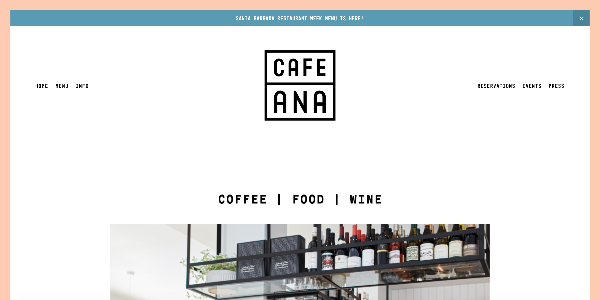

Final project proposal
Introduction
089 Cafe
089 Cafe wants to be a coffee shop not only for drinking coffee but to meet with friends, hang around or study. There are different sections for each thing you want to do like a area with couches to just chill or drink coffee or a silence room where you can work and study on your own without getting distracted from noise. Also the coffee sells typical german bakery products and bread.
Target audience
Mostly aimed for people with the age between 16 and 28 but pretty much everyone is welcome. The website will have a modern and clean looking layout where people from young to old can easily navigate trough.
Main goal is to inform the user about the menu of the coffee, what makes particular this coffee shop so special, and where to find it.
Comparative analysis
Cafe Ana
Kreuzberg California
->

Scout Coffee
Website content
Home
Ever tasted typical bakery products of Germany whether sweet or salty? Taste them with a coffee while meeting with your friends, enjoy the moment by yourself or study for college, 089 Cafe is the right place for it.
[A coffee bar]
Menu
List of all the dishes and dinks, the cafe will provide. Grouped in coffee,specialties, desserts and drinks.
[A coffee with pastries on a plate next to it]
Location
Where you can found us.
[Map with the location of the cafe is marked]
About us
Our origins are from Germany, thats why the name of our cafe is 089 cafe. 089 is the area code (phone number) of Munich, where the founder of the cafe comes from. We want to share the typcial culture from Germany with the US with all the typcial dishes that come with it. Enjoy a good coffee while eating typical german bakery products and get a feeling of eurpean culture. We started the our first cafe in Santa Barbara 2020 and want to open a new one in San Luis Obispo.
[Skyline of Munich]